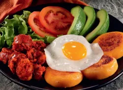

Llapingachos Recipe

Ingredients
- 4 large potatoes, peeled and chopped
- 1 cup of cheese (queso fresco or mozzarella), grated
- 1/4 cup of finely chopped onion
- 1 teaspoon of achiote powder
- Salt to taste
- Oil for frying
Instructions
- Boil the potatoes until they are soft. Drain and mash them in a bowl.
- Add the grated cheese, chopped onion, achiote powder, and salt to the mashed potatoes. Mix well until everything is combined.
- Divide the mixture into small portions and shape them into flat discs.
- Heat oil in a frying pan over medium heat. Fry the llapingachos until they are golden brown on both sides.
- Serve hot with aji sauce and avocado slices.
Go Back